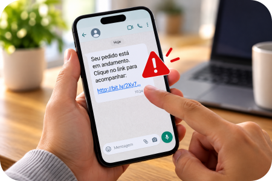
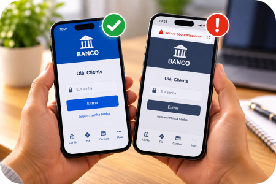

Uma mensagem chega no celular e parece urgente:
“Seu pedido está parado.” “Há uma cobrança pendente.” “Sua conta será bloqueada.” “Você tem um reembolso disponível.” “Atualize seus dados agora.”
O primeiro impulso pode ser clicar para descobrir o que aconteceu. É justamente aí que vale parar.
Mensagens falsas podem imitar bancos, lojas, transportadoras e até órgãos públicos. Algumas podem utilizar nome, CPF, endereço ou outras informações verdadeiras para parecer mais convincentes.
Por isso, uma mensagem conhecer seus dados não significa que ela seja verdadeira.
1. A mensagem está tentando fazer você agir depressa?
Um dos sinais que merecem atenção é a tentativa de criar urgência.
Frases como “Última oportunidade”, “Regularize imediatamente”, “Seu benefício será suspenso”, “Pagamento pendente” ou “Clique agora” podem ser usadas para fazer a pessoa agir antes de conferir a informação.
Mensagens alarmistas, ameaças de bloqueio imediato, promessas inesperadas de prêmio ou reembolso e pedidos urgentes de atualização cadastral merecem atenção.
Dica da Lu: quanto maior a pressa que a mensagem tenta provocar, maior deve ser a sua calma.

2. Não use o link da mensagem para descobrir se ela é verdadeira
Essa talvez seja a regra mais importante desta matéria.
Se a mensagem diz que existe algum problema com seu banco, uma compra, entrega ou cadastro, você não precisa entrar pelo link recebido para verificar.
Abra você mesmo o aplicativo oficial ou acesse o endereço oficial da instituição.
Recebeu uma mensagem dizendo que há problema com uma compra? Abra diretamente o aplicativo ou site onde comprou. Disseram que existe problema no banco? Entre no aplicativo oficial do banco. Falaram de uma encomenda? Consulte seu pedido ou rastreamento pelo canal oficial que você já conhece.
Não deixe a própria mensagem suspeita escolher o caminho que você vai usar para conferir se ela é verdadeira.

3. O nome, o logotipo e até seus dados podem enganar
Uma mensagem pode parecer muito convincente. Ela pode apresentar o nome de uma empresa conhecida, usar um logotipo parecido com o verdadeiro e até trazer informações pessoais corretas.
Em alguns golpes envolvendo encomendas, por exemplo, podem aparecer dados como nome, CPF, endereço, telefone ou informações relacionadas à compra.
Isso pode fazer a pessoa pensar: “Se eles sabem tudo isso, deve ser verdadeiro.” Não necessariamente.
Informações pessoais podem ser utilizadas justamente para tornar uma fraude mais convincente.
Lembre-se: “Eles sabem meus dados” não é prova de que a mensagem seja verdadeira.
4. Pediram senha, código ou informação bancária? Atenção redobrada
Desconfie especialmente quando uma mensagem inesperada solicitar senha, código recebido por SMS, código de autenticação, número de cartão, dados bancários ou atualização urgente de cadastro por meio de um link recebido.
Também não forneça códigos de autenticação enviados ao seu celular a terceiros.
Se houver alguma dúvida sobre sua conta, cadastro ou movimentação financeira, procure diretamente os canais oficiais da instituição.
5. O link parece estranho? Não tente “testar”
Links encurtados ou endereços diferentes dos canais oficiais podem ser sinais de alerta. Mas você não precisa virar especialista em endereços de internet para se proteger.
Na dúvida, existe uma solução muito mais simples: não clique.
Abra separadamente o aplicativo ou site oficial e confira a informação por lá. Se realmente existir uma cobrança, problema na conta, entrega pendente ou outra situação que exija providência, procure confirmá-la diretamente no ambiente oficial.
Método Mundo LuFiNas
Quando receber uma mensagem inesperada com link, cobrança ou pedido de informação, lembre-se:
PARE: não deixe a urgência da mensagem decidir por você.
NÃO CLIQUE: evite abrir links ou anexos suspeitos.
CONFIRA: pergunte a si mesmo: eu realmente esperava essa cobrança, entrega ou contato?
ENTRE PELO CANAL OFICIAL: abra você mesmo o aplicativo ou acesse o site oficial da instituição.
SÓ DEPOIS DECIDA: confirme a informação antes de fornecer dados, realizar pagamentos ou tomar qualquer outra providência.
6. E se a mensagem vier de alguém conhecido?
Também merece atenção. Contas de pessoas conhecidas podem ser comprometidas e utilizadas para enviar mensagens, arquivos ou links maliciosos.
Por isso, se um amigo ou familiar enviar inesperadamente um arquivo, link ou pedido estranho, principalmente envolvendo dinheiro ou informações pessoais, confirme com essa pessoa por outro meio antes de agir.
Uma simples ligação pode evitar muita dor de cabeça.
Cliquei. E agora?
Primeiro: não continue seguindo as instruções da mensagem.
Não abra outros links nem forneça novas informações. Feche a página suspeita e, se houver risco de comprometimento do aparelho, desconecte-o temporariamente da internet.
Se você informou dados bancários, senhas ou percebeu alguma movimentação financeira suspeita, procure imediatamente a instituição financeira pelos canais oficiais.
Dependendo do que aconteceu, também pode ser necessário alterar senhas comprometidas utilizando um dispositivo seguro, verificar a segurança do aparelho, acompanhar contas e movimentações, guardar mensagens, números, comprovantes e capturas de tela e registrar boletim de ocorrência quando cabível.
Se houve transferência de dinheiro ou um Pix para o golpista, existem providências específicas que podem ser tomadas. Veja também: Fiz um Pix e percebi que era golpe: o que fazer imediatamente?
Checklist da Lu
☑ Eu esperava essa mensagem?
☑ Estão tentando me apressar?
☑ Estão pedindo dados, códigos ou pagamento?
☑ Posso conferir sem usar esse link?
☑ A informação aparece no canal oficial?
Se alguma coisa parecer estranha, pare e confirme antes de continuar.
Dica da Lu: na dúvida, não tente descobrir se o link é seguro clicando nele. Vá até a fonte por conta própria.
Para terminar...
Golpes digitais mudam de aparência rapidamente. Hoje pode ser uma encomenda. Amanhã, uma falsa cobrança. Depois, um suposto benefício, prêmio, reembolso ou problema bancário.
Por isso, mais importante do que tentar decorar todos os golpes existentes é criar um hábito simples:
Recebeu → parou → conferiu → só então agiu.
Alguns segundos de atenção antes de clicar podem evitar um problema muito maior depois.
Fontes consultadas
Ministério das Comunicações — Ataque phishing: como identificar tentativas de fraude na internet — sinais de alerta, urgência, links suspeitos e uso dos canais oficiais.
Ministério da Justiça e Segurança Pública — Cliquei em links — providências após clicar em link suspeito.
Receita Federal — Recebi um WhatsApp. E agora? — falsas cobranças envolvendo encomendas e uso de dados pessoais em golpes.